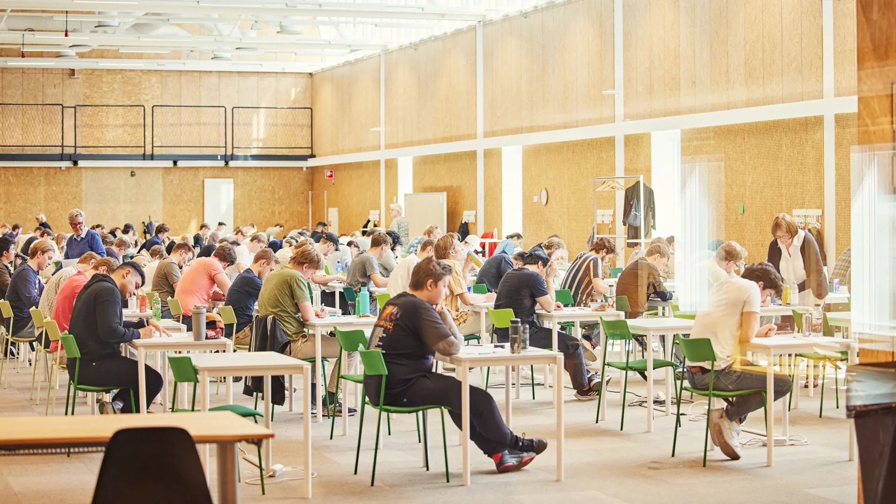

Sjöfart och Miljö
7,5 hp
Lektion 1: Introduktion
- Kursansvarig
- Kursupplägg
- Moodle
- Examination
- Studentinflytande
Kursansvarig - Kim Alfredsson
- Ny på skolan, vikarierar för Ellinor
- Började till sjöss 2001
- allt möjligt sedan dess
- skolning torrlastning - offshore - ankarhantering - seismik - sjömätning - roro
- sen ca fem år på expeditionskryssning
- spenderat mycket tid på varv, både nybyggnation och med gammalt skrot
- Ny på skolan, vikarierar för Ellinor
- Började till sjöss 2001
- allt möjligt sedan dess
- skolning torrlastning - offshore - ankarhantering - seismik - sjömätning - roro
- sen ca fem år på expeditionskryssning
- spenderat mycket tid på varv, både nybyggnation och med gammalt skrot
Sjöfart och Miljö
- Sjöfart och Miljö: uppdelad i två delar med något olika mål och syften - jag kommer till det
- arbetsmiljön har störst del
- 7,5hp som motsvarar ca 200 arbetstimmar - vad jag förväntar mig ni lägger ner - planera för dem
- 7,5 hp
- 200 timmar
- Tonvikt på arbetsmiljö
Kursplan - Kursmål
Studenten förväntas efter avslutad kurs kunna:
- redogöra för effekter av utsläpp från fartyg
- redogöra för de bestämmelser som reglerar sjöfartens miljöeffekter
- visa kunskap och förståelse för aktiviteter och utrustning som kan minska sjöfartens miljöeffekter
- redogöra för fysiska, organisatoriska och sociala faktorer som påverkar arbetsmiljön ombord
- redogöra för de bestämmelser som reglerar arbetsmiljö och säkerhet ombord
- visa kunskap och förståelse för aktiviteter och åtgärder för att minska ohälsa och olycksfall ombord
- söka, sammanställa och kritiskt värdera relevant information gällande sjöfartens miljöpåverkan
- söka, sammanställa och kritiskt värdera relevant information gällande arbetsmiljön ombord
- praktiskt tillämpa metoder och tekniker för att förebygga ohälsa och olycksfall, samt säkerställa en god arbetsmiljö ombord
- välja och hantera personlig skyddsutrustning för vanligt förekommande arbeten ombord
- ur ett helhetsperspektiv göra en hållbarhetsbedömning av olika åtgärder för att minska sjöfartens miljöpåverkan
- identifiera och formulera arbetsmiljöproblem och ur ett helhetsperspektiv
- bedöma olika åtgärder för att förebygga ohälsa och olycksfall, samt säkerställa en god arbetsmiljö ombord
Mål
Efter avslutad kurs ha den kunskap som krävs för att utföra och arbetsleda arbete ombord på ett säkert sätt.
V.36 -> V.41: Arbetsmiljö
- Reglering
- Risker och riskhantering
- Arbetsmiljö
V.42 -> V.44: Sjöfartens påverkan på miljö
- Miljöeffekter
- Klimateffekter
- Regelverk
Moodle
- öppnas upp vecka för vecka - materialet kommer alltså upp efterhand
- finns dokument där redan nu
- studiehandlednng
- behöver inte köpa någon litteratur
- kommer använda en bok i miljödelen, men den finns på biblioteket som ebok
- Kurslitteratur
- Instuderingsfrågor
- Formativa tester
Studiehandledning
- finns på moodle
- innehåller det mesta ni behöver veta
- undrar ni om något; börja med att konsultera den
Examination
- Två övningar
- Sex inlämningsuppgifter
- Ett seminarie
- praktiska övningmoment, bland annat gasmätning
- de flesta av uppgifterna är relaterat till första delen av kursen
- ett seminare: arbetsmiljö
Sök i Studiehandledning
- Vem är examinator?
- När är deadline för inlämningsuppgift 1?
- Examinator: innebär inte att han rättar tentor, det kommer jag göra.
Ej inne på tid - underkänd
- kommer fler chanser men senare
Omexamination på uppgifter
En gång under LP 1, en andra gång under LP 2
- om ej klart då - nästa kurstillfälle
Skriftlig tentamen

Sök i Studiehandledning
- Vad krävs för G?
- Vad krävs för VG?
För betyget G krävs:
- Godkänt resultat på samtliga examinerande moment
För VG krävs i tillägg:
- Väl godkänt på inlämningsuppgift 7 samt;
- Väl godkänt på salstentamen
Kontakt
- Moodle: Frågeforum eller enskilt
- Kontor mot innergården
- Telefon eller epost
Kursutvärdering
- Önskat seminare
- Inlämningsuppgifter
- Tidigare studenter önskat att man har ett seminarie istället för inlämningsuppgift
- Tidigare studenter har uppskattat inlämningsuppgifter, även om en del tyckt att det varit mycket arbete, så därför har jag behållt upplägget
Gruppuppgift
- Vad har jag för förväntningar på den här kursen.
- Vad har jag för farhågor inför den här kursen.
- Vad kan jag bidra med i kursen.
Studentinflytande
Vecka 1 - Mål
- Få en grundläggande förståelse för regler som styr arbetsmiljön
- Få en grundläggande förståelse för de risker som finns ombord
- Orientering kring hur man arbetar med arbetsmiljö ombord
Medtag dator etc.